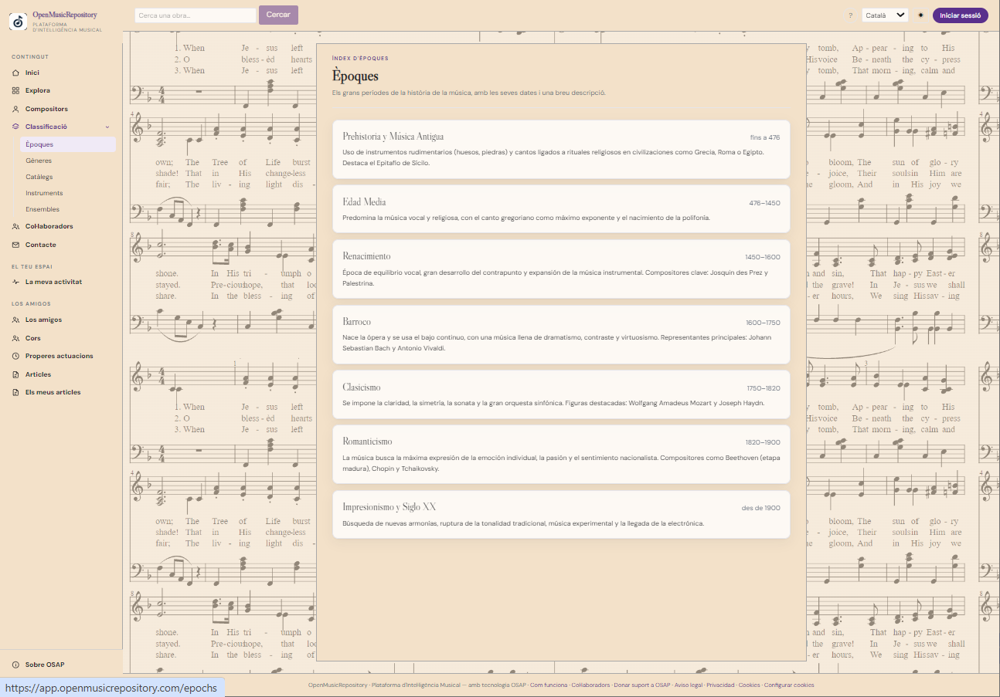
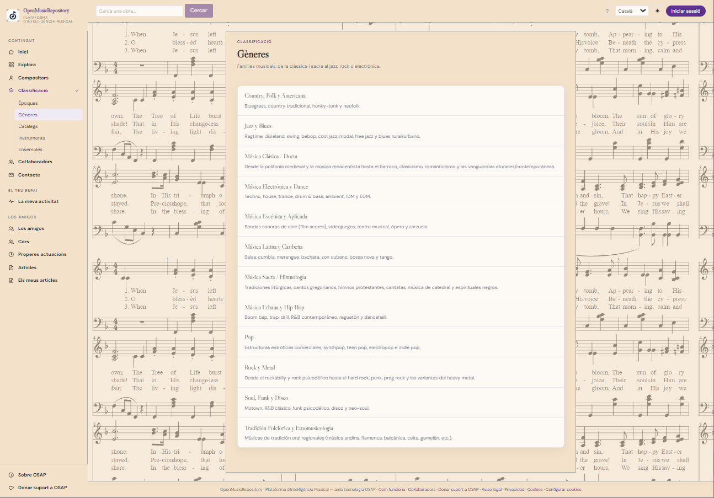
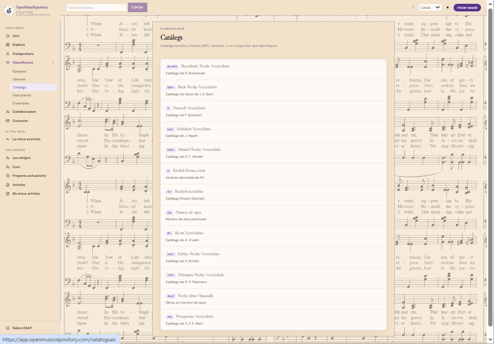
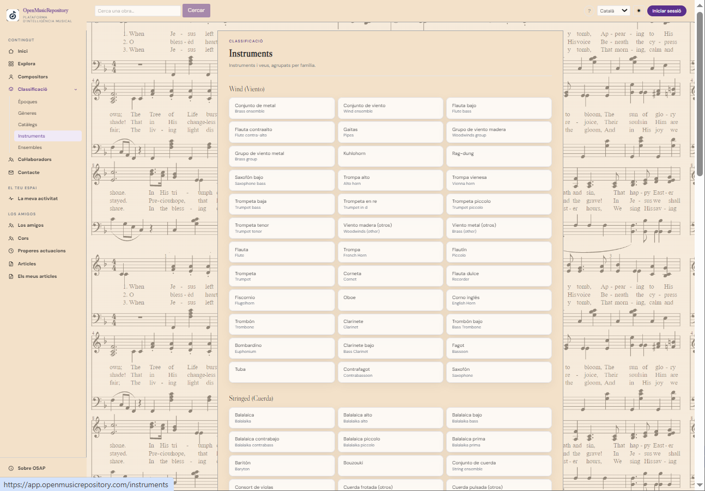
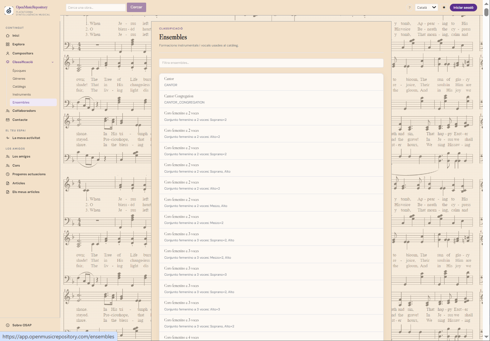

Benutzerhandbuch
Musikalische Klassifikation
El menú Classificació fasst die Kriterien zusammen, mit denen OSAP Werke ordnet. Jeder Eintrag ermöglicht es, den Katalog aus einer anderen musikalischen Perspektive zu erkunden und die verwendeten Werte einzusehen.
1. Epochen
Zeigt die historischen Epochen, mit denen Werke zeitlich eingeordnet werden. Bezeichnungen und chronologische Grenzen sind Richtwerte: Musikepochen überschneiden sich, und es gibt nicht immer ein allgemein gültiges Trennjahr.

Mögliche Probleme: ein Werk kann zwischen Epochen liegen; sein Kompositionsdatum kann unbekannt oder umstritten sein, und die Epoche eines Werks stimmt nicht immer genau mit der Lebenszeit des Komponisten überein. Wenn eine Zuordnung falsch erscheint, nennen Sie das Werk und geben Sie eine Quelle zur Begründung der Korrektur an.
2. Genres
Gruppiert Werke nach Musiktypen oder -familien. Das Genre beschreibt ein musikalisches Merkmal oder eine Tradition und ist nicht unbedingt mit der Form, der Epoche oder der ausführenden Besetzung gleichzusetzen.

Mögliche Probleme: manche Werke verbinden mehrere Gattungen, Bezeichnungen unterscheiden sich je nach Tradition oder Quelle, und derselbe Begriff kann historisch verschiedene Bedeutungen haben. Die verfügbare Klassifikation ist möglicherweise allgemeiner als die Beschreibung eines Fachmenschen.
3. Kataloge
Führt Nummerierungssysteme und thematische Referenzen zusammen, mit denen Werke in einem Katalog identifiziert werden, etwa BWV, Köchel oder Hoboken. Eine Katalogreferenz hilft, Werke mit gleichem Titel zu unterscheiden und alternative Bezeichnungen zu erkennen.

Mögliche Probleme: eine Nummer kann je nach Katalogausgabe oder Überarbeitung variieren; ein Werk kann mehrere Referenzen haben, und importierte Angaben können unvollständig oder falsch übertragen sein. Prüfen Sie das vollständige Kürzel und die Nummerierung, nicht nur die Zahl.
4. Instrumente
Ordnet die Angaben zu Instrumentierung und Stimmen, die mit Werken verknüpft sind. Damit lässt sich das Repertoire nach Instrument oder Instrumentenfamilie durchsuchen, sofern diese Angaben erfasst sind.

Mögliche Probleme: die Quelle kann eine unvollständige Besetzung angeben, Synonyme verwenden, Instrumente anders gruppieren oder das Originalinstrument mit einer späteren Bearbeitung verwechseln. Dass ein Instrument nicht aufgeführt ist, beweist nicht, dass das Werk es nicht verwendet.
5. Besetzungen
Beschreibt vokale oder instrumentale Besetzungen wie Chor, Quartett, Orchester oder andere Kombinationen. Gemeint ist die Besetzung, für die die Musik vorgesehen ist; sie kann sich von einem einzelnen Instrument unterscheiden.

Mögliche Probleme: ein Werk kann mehrere Fassungen für unterschiedliche Besetzungen haben; Bezeichnungen für Ensembles sind nicht immer gleichbedeutend, und manche Quellen beschreiben die Besetzung detailliert, während andere nur eine allgemeine Kategorie nennen.
Eine unsichere Klassifikation beurteilen
- Öffnen Sie das konkrete Werk und prüfen Sie, welcher Wert zugeordnet ist.
- Unterscheiden Sie zwischen fehlenden Daten und einem offenbar falschen Wert.
- Prüfen Sie, sofern verfügbar, die Originalquelle oder eine zuverlässige Ausgabe.
- Envía la incidencia desde Freunde und Musikgemeinschaft, unter Angabe des Werks, des aktuellen Werts, des vorgeschlagenen Werts und der Belege.
Die Klassifikation spiegelt die von OSAP zusammengestellten Daten wider. Nicht für alle Werke liegen vollständige Informationen vor, und Kategorien müssen möglicherweise überprüft werden.